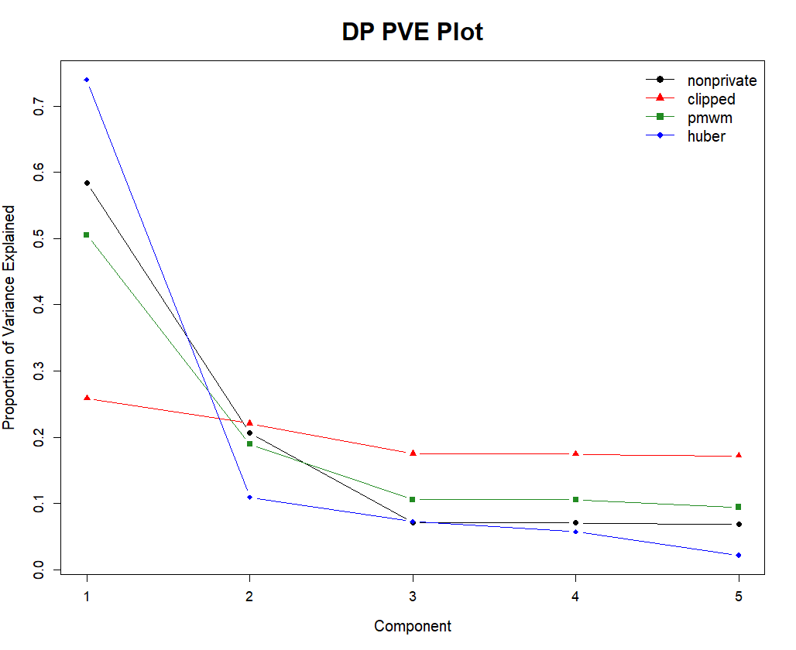
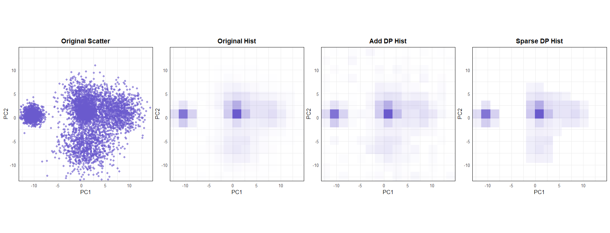
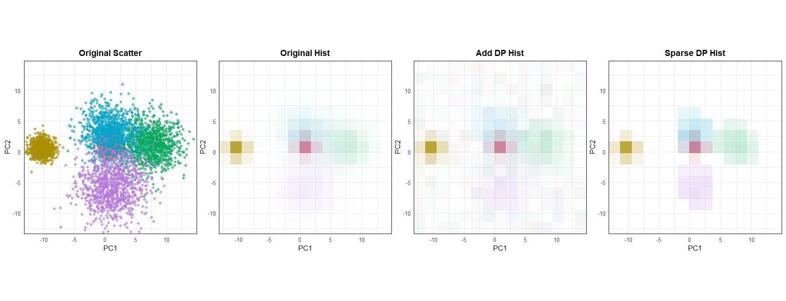

dppca provides tools for differentially private principal component analysis (PCA) visualization in R. It supports private PC direction estimation, private scree/PVE plots, private score plots, grouped score visualizations, and an interactive Shiny app.
Installation
You can install the development version from GitHub with:
# install.packages("devtools")
devtools::install_github("yejinjo0220/dppca")Basic workflow
The main workflow is:
- estimate private PC directions with
dp_pc_dir(). - estimate and plot private scree/PVE summaries with
dp_scree()anddp_scree_plot(). - compute and plot private PCA score summaries with
dp_score()anddp_score_plot(). - optionally use grouped score visualizations or the Shiny app.
The examples below use the synthetic Gaussian cluster dataset included in the package.
1. Private PC directions
dp_pc_dir() estimates leading principal component directions under differential privacy.
The returned object contains private principal component directions that can be used PCA summaries and visualizations.
2. Private scree values
dp_scree() estimates private scree values or proportions of variance explained. The method is chosen by the method argument.
set.seed(123)
scree_clipped <- dp_scree(
X,
k = 5,
method = "clipped",
control = clipped_control(C_clip = 3),
eps = 3,
delta = 1e-4
)
scree_clippedThe package currently supports three scree estimation methods:
-
"clipped": clipped mean based estimator; -
"pmwm": private modified winsorized mean based estimator; -
"huber": Huber-type robust estimator.
Method-specific tuning parameters are specified using the control helper unctions clipped_control(), pmwm_control(), and huber_control().
For example, multiple scree methods can be requested by passing a vector to method and a named list to control.
set.seed(123)
scree_all <- dp_scree(
X,
k = 5,
method = c("clipped", "pmwm", "huber"),
control = list(
clipped = clipped_control(C_clip = 3),
pmwm = pmwm_control(a = 0, b = 50, trim_const = 10, eta = 0.01),
huber = huber_control(k_min_m2 = -10, k_max_m2 = 10, m2_frac = 1 / 4)
),
eps = 3,
delta = 1e-4
)
scree_allPrivate scree plots
dp_scree_plot() visualizes private scree values or private proportions of variance explained.
set.seed(123)
scree_plot_all <- dp_scree_plot(
X,
k = 5,
method = c("clipped", "pmwm", "huber"),
control = list(
clipped = clipped_control(C_clip = 3),
pmwm = pmwm_control(a = 0, b = 50, trim_const = 10, eta = 0.01),
huber = huber_control(k_min_m2 = -10, k_max_m2 = 10, m2_frac = 1 / 4)
),
eps = 3,
delta = 1e-4
)
scree_plot_all

3. Private PCA score
dp_score() computes differentially private summaries of two-dimensional PCA scores using histogram-based methods.
set.seed(123)
score_result <- dp_score(
X,
eps = 3,
delta = 1e-4,
bins = c(8, 8),
method = "add"
)
score_result Available score methods include:
-
"add": additive histogram method; -
"sparse": sparse histogram method.
Use method = "add" or method = "sparse" to run one histogram method, or method = c("add", "sparse") to compute both.
Private score plot
dp_score_plot() draws private score plots based on the histogram summaries returned by dp_score().
If method is omitted, both additive and sparse histogram methods are used.
set.seed(123)
score_plot <- dp_score_plot(
X,
eps = 3,
delta = 1e-4,
bins = c(15, 15)
)
score_plot$plot$all

Grouped score plot
For data with group labels, dp_score_group() and dp_score_plot_group() provide grouped versions of the private score.
data(gau_g, package = "dppca")
X_g <- gau_gCompute grouped private score.
set.seed(123)
score_group <- dp_score_group(
X_g,
group = "group",
eps = 3,
delta = 1e-4,
bins = c(8, 8),
method = "add"
)
score_groupDraw a grouped private score plot.
set.seed(123)
score_group_plot <- dp_score_plot_group(
X_g,
group = "group",
eps = 3,
delta = 1e-4,
bins = c(15, 15),
)
score_group_plot$plot$all

Shiny app
dppca_app() launches a Shiny app for exploring private scree and score plots through a graphical interface.
You can also launch the app with a user-supplied dataset.
Data
dppca includes three datasets for examples and demonstrations:
-
gau: a synthetic 20-dimensional Gaussian cluster dataset; -
gau_g: a grouped version ofgauwith an additionalgroupcolumn; -
adult: a numerical subset of the Adult dataset from the UCI Machine Learning Repository.
Data sources
The package includes a numerical subset of the Adult dataset from the UCI Machine Learning Repository. The Adult dataset is licensed under the Creative Commons Attribution 4.0 International (CC BY 4.0) license. This package retains five numerical variables: age, education_num, capital_gain, capital_loss, and hours_per_week.
The package also includes synthetic Gaussian cluster datasets generated by the package authors for reproducible examples.
References
The methods and examples in dppca are related to the following references.
Kim, M. and Jung, S. (2025). Robust and Differentially Private Principal Component Analysis. Statistical Analysis and Data Mining: An ASA Data Science Journal, 18(6), e70053. doi:10.1002/sam.70053.
Dwork, C. and Roth, A. (2014). The Algorithmic Foundations of Differential Privacy. Foundations and Trends in Theoretical Computer Science, 9(3–4), 211–407. doi:10.1561/0400000042.
Ramsay, K. and Spicker, D. (2025). Improved subsample-and-aggregate via the private modified winsorized mean. arXiv:2501.14095.
Yu, M., Ren, Z., and Zhou, W.-X. (2024). Gaussian differentially private robust mean estimation and inference. Bernoulli, 30(4), 3059–3088.
Nissim, K., Raskhodnikova, S., and Smith, A. (2007). Smooth Sensitivity and Sampling in Private Data Analysis. In STOC’07: Proceedings of the 39th Annual ACM Symposium on Theory of Computing, 75–84. doi:10.1145/1250790.1250803.
Wasserman, L. and Zhou, S. (2010). A Statistical Framework for Differential Privacy. Journal of the American Statistical Association, 105(489), 375–389. doi:10.1198/jasa.2009.tm08651.
Karwa, V. and Vadhan, S. P. (2017). Finite Sample Differentially Private Confidence Intervals. arXiv:1711.03908.
Becker, B. and Kohavi, R. (1996). Adult dataset. UCI Machine Learning Repository. doi:10.24432/C5XW20.